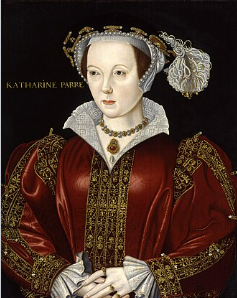

Katherine Parr: 1512 - 1548

Childhood and Early Life: 1512 - 1526
Birth: July or August 1512 (exact date unknown) in Blackfriars, a district in London.
Parents: Sir Thomas Parr and Maud Green.
Childhood: Not much is known about her childhood. She grew up in Blackfriars, in her parents London townhouse. As for her education, she was taught and was fluent in French, Italian and Latin.
First Marriage to Baron Edward de Burgh: 1526 - 1528
1526: At 14, Katherine's mother arranged for her to be married to the 63 year-old nobleman Baron Edward de Burgh. (Arranged marriages between nobility, irrespective of age differences, and getting married at a very young age were common at the time.) Edward was a widower and his three children from his first marriage were older than Katherine. The went to live at his manor house in the town Gainsborough in the Lincolnshire countryside.

1528: Edward dies, leaving Katherine a widow at 16. What she did in the years immediately after this is not known.
Second Marriage to John Neville, Lord Latimer: 1534 - 1543
1534: Katherine, now 22, recieves an offer of marriage from John Neville, Lord Latimer, who lives in the Yorkshire countryside in northern England. He is in his late thirties, and has been a widower twice. He has two children from his first marriage. They live in his home of Snape Castle. She now becomes Lady Latimer.

October 1536: The Pilgrimage of Grace breaks out with its headquarters in Lincolnshire. The rebels, knowing that John is a religious conservative and likely supporter of their cause, appear and Snape Castle and threatened violence if he didn't join their cause. He did and was appointed as a commander in their army. Henry VIII sent over an army to meet the rebel's army, and the head of Henry's army, the Duke of Norfolk, managed to persuade the rebels that their demands would be met by the king and to disperse.
November 1536: Now that he is released from the rebel's army, John returns home.
January 1537: John is called by Henry to serve in northern England, guarding the Scottish border. When he leaves, the rebels, doubting his loyalty to their cause, take advantage and attack Snape Castle. They ransacked the castle, seized valubles, and did a lot of damage. Katherine and her two stepchildren were taken hostage as a reassurance of John's loyalty. The rebels wrote to John and said that they had his family in custody, and if he didn't return immediately, then they would destroy the castle. He returned and managed to talk the rebels down and got them to leave. The leaders of the rebellion were later executed, but John was pardonned by Henry, as it became obvious that he was cooerced into the fight and wanted no part in it. It is thought that due to what happened, this is when Katherine started seriously thinking about Protestantism and became an adherent to it.
Late 1530s - 1543: Katherine and John, wanting to get away from their home in the north of England, where the trauma of the rebellion had taken place, were often in London at court. There, they were on good terms with Henry, though he was not yet interested in her, as he was planning to marry Anne of Cleeves, and after that, was married to Catherine Howard.
February 16th, 1543: Katherine now 31, is still at court with John. John is sick of unknown causes and close to death. She attracks the attention of Henry who gives her a gift of dresses.
March 2nd, 1543: John dies and leaves Katherine well provided for in his will.
Third Marriage to Henry VIII: 1543 - 47
Spring 1543: Still at court, Katherine starts dating Sir Thomas Seymour, younger brother to the late Queen Jane. He is closer to her age (unlike Henry who was 52 by then) and is said to be handsome, dashing, and a bit of a ladies man. Around this time, Henry makes his interest in her known. While she is cordial toward him, she makes it known that she wants to marry Thomas and is not intersted in marrying Henry.

May 1543: To get rid of Thomas, Henry appoints him permanent ambassador to the Netherlands in Brussles.
July 12th, 1543: Henry and Katherine are married. By all existing accounts, it was a good marriage, they were good companions to each other; genuinely cared about each other and had exciting intellectual conversations, especially on theology, as Katherine was Protestant-leaning. He picked her because of these qualities, and because she was older, more mature, and less volatile then Katherine Howard.

Life as Queen of England: Katherine was popular with the people of England. She was warm and amiable and was pleasant to nobility and servants alike, regardless of rank. She was a good and intellectual conversationalist, and loved a friendly argument with all people, but especially Henry, on religious doctrine, on which she was very Protestant leaning.
1544, 1545, 1547: Katherine publishes three religious books that are very pro-Protestant. This could be seen as dangerous, as even though the chruch of England was becoming more liberal and moving in a Protestant direction from its origins of Catholicsm, there were still many religious leaders and coutiers who opposed the change, and could cause Katherine trouble if they wanted. Henry in fact was a religious moderate, and had burned at the stake as heretics people he deemed too Catholic or too Protestant.
1543: She became friends with Henry's children, and reconciled him with his daughters. Mary and Elizabeth had not been very close with Henry due to what happened to their mothers. She even took part in Elizabeth and Edward's education; ensuring that they had Protestant leaning tutors. This would influence them to later declare Anglicanism (Protestantism) as the official religion of England when they each gained the throne.
February 7th, 1544: As a thank you for reconciling him with his children, Henry has Parliament pass the Third and final Act of Succession of his reign. It reinstated Mary and then Elizabeth (though not their former rank as princesses) and any children they might have to the line of succession after Edward and any children he might have. It then stated that if Henry's three children didn't have heirs, the throne would then pass to the children and grandchilren of his young sister Mary. In accordance with the law of succession at the time, it should then instead pass to his older sister Margaret and her children. However, Margaret (dead by 1541) had married James IV of Scotland, and the current ruler of Scotland was her granddaugher Mary Stuart. Henry had tried to marry Edward off to Mary to unite the British Isles, but the Scots refused. So in retaliation, he ordered his troops to attack southern Scotland, and to leave Margaret and her descendants out of the line of succession, so that in revenge, England and Scotland would not be united. After Elizabeth died childless, this act was ignored, and Mary Stuart's son was proclaimed King of Scotland and England.
July 7th - September 14th, 1544: Katherine is appointed regent of England as Henry is off to conquer the French town of Boulogne. (France was England's traditional enemy at the time.) It falls to a seige in September.

1546: The conservative Catholic Bishop Gardiner, had always suspected Katherine of being a secret Protestant. She and her ladies in waiting had been said to have received books that were banned (being of a too Protestant nature) from a known Protestant activist, Anne Askew, who was later burned at the stake for heresy. The possession of her ladies in waiting were searched to see if the books could be found. Nothing incriminating was found. Though Gardiner convinced the king to sign a warrant for her arrest on the basis of heresy. The warrant fell from the pocket of a councillor's gown and was found by a member of Katherine's household who took it straight to her. She panicked and started screaming. When the king heard her and came over to see what was going on, she told him that she was scared that she had displeased him. He denied it. Recovering her composure, she went later that night to talk to the king and his friends. When he tried to bring up a religious debate, she conformed to his ideas and said that he was always right on matters of religion from now on. In that way, she was able to save herself from arrest and possible death. The next day, when she was in the palace gardens with Henry and troops came to arrest her of charges of heresy, Henry called them names, hit them, and ordered them to leave.
January 23rd, 1547: Henry announces that his son Edward is to succeed him with a regency council until he is 18, as Edward is only 9 at the time. He mentions that it will be led by Edward Seymour as Lord Protector (Edward's uncle and his mother Jane Seymour's older brother) and other important nobles. He also left Katherine money, jewels, plate, and household good in his will, ensuring that she was well provided for. He wrote that Katherine would still be treated as Queen of England at court, as if he were still alive.
January 28th, 1547: Henry VIII dies at age 55. His son Edward is now proclaimed King Edward VI. Henry is buried on February 16th at Windsor Castle next to his former wife Queen Jane at his request.

Fourth Marriage to Thomas Seymour, Lord Sudeley: 1547 - 1548
February 1547: After Henry died, Thomas Seymour younger brother of Jane Seymour, and therefore uncle to the then current King Edward VI, was back at court, as he was no longer scared of Henry sending him off to as an ambassador to a foreign country. Thomas was ambitious, manipulative, and thought himself to be a ladies man. So he had set his sights on Elizabeth, sister to Edward. He sent her love letters, and asked her to marry him. She said no, as she said she was too young and also neeeded time to mourn her father. It was after this refusal, that Thomas then decided to re-pursue the now very rich widow, Katherine, again, as he thought that her money and influence could get him a place on the regency council where he could control his nephew and thus rule the country.
March 1547: The now 40 year-old Thomas resumes his relationship to 35 year-old Katherine, and after some time has passed, proposes. She accepts, as he is the man most closest to her in age that she has every married, and she also belives that she is in love with him, though at the time doesn't realize that he is using his charm to manipulate getting the rich widow to marry him. Katherine now leaves court and moves to the Old Manor House in the town of Chelsea; one of the properties that was left to her use for the rest of her lifetime by Henry in 1544. (It has since been demolished.)
April 1547: Thomas and Katherine marry in secret at the Old Manor House. They must marry in secret, as officially, Katherine is still supposed to be in mourning for Henry. Also, dowager queens were supposed to wait a few months after their husbands died, to prove that they weren't pregnant by them before remarrying, so that that would stop any potential issues for the line of succession to the throne.

November 1547: Katherine publishes her third and final book: Lamentations of a Sinner a book of Protesant doctrine. Now that Henry is dead, and Edward is an openly Protestant king, Kathering has nothing to fear by openly declaring her support for Protestantism.

January 1548: Elizabeth was becoming tired of the rigid court etiquette and Katherine, still maintaining her friendship with her despite Henry's death, sought to rescue her from that situation. So she invited her to stay with her and Thomas at the Old Manor. Thomas then proceeds to seduce the 14 year-old Elizabeth once she arrives, as he still hopes that he will get her to marry him, and he can one day become King of England. (He thinks that he will get Katherine to divorce him if the situation comes to it.)

March 1548: Katherine realizes that after husbands, she is now pregnant for the first time.
April 1548: Katherine discovers Thomas and Elizabeth together in a compromising situation, and finally realizes Thomas's motives all along. She is devastated, and this causes a rift between her and Thomas for the rest of her life, though they do later try to pretend that all is well for the sake of the impending baby.
May 1548: Elizabeth, due to the situation, leaves and goes to live in her manor house in the town of Cheston, as she doesn't want to go back to court.
June 1548: Because the Old Manor House now holds bad memories for them, Katherine and Thomas move to his home of Sudeley Castle in the countryside.

August 30, 1548: Katherine gives birth to a daughter: Mary.
September 7th, 1548: Katherine dies at 36 of an infection acquired in childbirth; the same way her sister-in-law Jane Seymour died. She is buried the next day in the chapel of Sudeley Castle. Mary unfortunately, would die at age four, and Thomas would be beheaded the next year in 1549, for trying to kidnap Edward and therefore control him and rule as regent until he was 18. So if Katherine had lived, she most likely would have been widowed four times.
Back to the main wives page